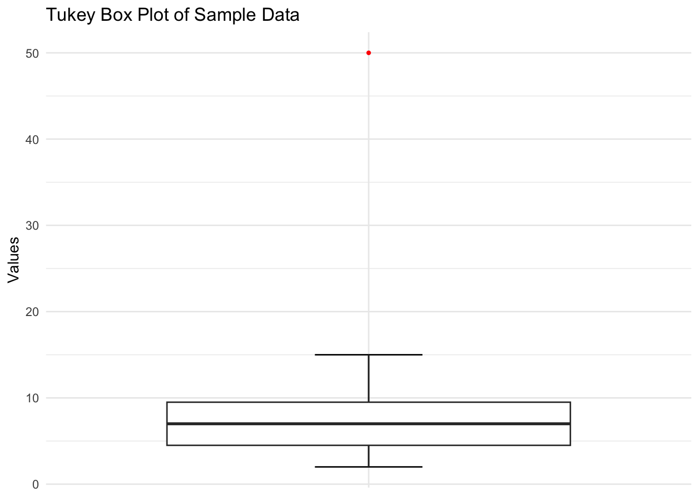

This chapter explores fundamental types of data visualizations: bar plots, histograms, and box plots, in particular.
13.1 Introduction to Data Types and Visualization
Before diving into specific visualization techniques, it’s crucial to understand the different types of data you might encounter and how they influence your choice of visualization method. We’ll explore these concepts with practical examples using the ggplot2 library in R.
First, let’s load the necessary libraries:
library(ggplot2)library(dplyr)
Attaching package: 'dplyr'
The following objects are masked from 'package:stats':
filter, lag
The following objects are masked from 'package:base':
intersect, setdiff, setequal, union
library(tidyr)library(scales)
13.1.1 Data Types and Visualization Examples
Categorical (Qualitative) Data
Nominal Data: Categories with no inherent order. Example: Colors of cars sold
# Create sample data car_colors <-data.frame(color =c("Red", "Blue", "Green", "Black", "White"),count =c(22, 18, 15, 30, 25) )# Bar plotggplot(car_colors, aes(x = color, y = count)) +geom_bar(stat ="identity", fill ="skyblue") +labs(title ="Car Sales by Color (Bar Plot)",x ="Color", y ="Number of Cars Sold") +theme_minimal()
# Pie chartggplot(car_colors, aes(x ="", y = count, fill = color)) +geom_bar(stat ="identity", width =1) +coord_polar("y", start =0) +labs(title ="Car Sales by Color (Pie Chart)") +theme_void() +theme(legend.title =element_blank())
# Treemaplibrary(treemapify)ggplot(car_colors, aes(area = count, fill = color, label = color)) +geom_treemap() +geom_treemap_text() +labs(title ="Car Sales by Color (Treemap)") +theme(legend.position ="none")
Ordinal Data: Categories with a meaningful order. Example: Education levels
# Create sample data education_levels <-data.frame(level =factor(c("High School", "Bachelor's", "Master's", "PhD"),levels =c("High School", "Bachelor's", "Master's", "PhD")),count =c(100, 80, 40, 20) )# Ordered bar plotggplot(education_levels, aes(x = level, y = count)) +geom_bar(stat ="identity", fill ="lightgreen") +labs(title ="Highest Education Level Achieved (Bar Plot)",x ="Education Level", y ="Number of People") +theme_minimal()
# Stacked bar plot (with arbitrary grouping) education_levels_stacked <- education_levels %>%mutate(group =c("Group A", "Group A", "Group B", "Group B"))ggplot(education_levels_stacked, aes(x = group, y = count, fill = level)) +geom_bar(stat ="identity") +labs(title ="Education Levels by Group (Stacked Bar Plot)",x ="Group", y ="Number of People") +theme_minimal()
# Heatmap (with arbitrary second dimension) education_heatmap <- education_levels %>%mutate(year =2020:2023,count = count * (1+seq(0, 0.3, length.out =4))) %>%pivot_wider(names_from = year, values_from = count) education_heatmap_long <- education_heatmap %>%pivot_longer(cols =-level, names_to ="year", values_to ="count")ggplot(education_heatmap_long, aes(x = year, y = level, fill = count)) +geom_tile() +scale_fill_viridis_c() +labs(title ="Education Levels Over Time (Heatmap)",x ="Year", y ="Education Level") +theme_minimal()
Numerical (Quantitative) Data
Discrete Data: Countable values, often integers. Example: Number of children in families
# Create sample data family_sizes <-data.frame(children =0:5,families =c(20, 45, 30, 20, 10, 5) )# Bar plotggplot(family_sizes, aes(x =factor(children), y = families)) +geom_bar(stat ="identity", fill ="coral") +labs(title ="Distribution of Family Sizes (Bar Plot)",x ="Number of Children", y ="Number of Families") +theme_minimal()
# Line plot (assuming data over time) family_sizes_time <- family_sizes %>%mutate(year =2015:2020)ggplot(family_sizes_time, aes(x = year, y = families, group = children, color =factor(children))) +geom_line() +geom_point() +labs(title ="Family Sizes Over Time (Line Plot)",x ="Year", y ="Number of Families", color ="Number of Children") +theme_minimal()
`geom_line()`: Each group consists of only one observation.
ℹ Do you need to adjust the group aesthetic?
# Scatter plot (comparing two discrete variables) family_data <-expand.grid(children =0:5,bedrooms =1:4 ) %>%mutate(families =rpois(n(), lambda =10))ggplot(family_data, aes(x = children, y = bedrooms, size = families)) +geom_point(alpha =0.6) +scale_size_continuous(range =c(1, 10)) +labs(title ="Families by Number of Children and Bedrooms (Scatter Plot)",x ="Number of Children", y ="Number of Bedrooms", size ="Number of Families") +theme_minimal()
Continuous Data: Measurable values that can take any value within a range. Example: Heights of individuals
# Create sample dataset.seed(123) heights <-data.frame(height =rnorm(1000, mean =170, sd =10))# Histogramggplot(heights, aes(x = height)) +geom_histogram(binwidth =5, fill ="purple", color ="black") +labs(title ="Distribution of Heights (Histogram)",x ="Height (cm)", y ="Frequency") +theme_minimal()
# Scatter plot with colorggplot(car_data, aes(x = mpg, y = price, color = make)) +geom_point(alpha =0.7) +labs(title ="Car Prices vs. MPG by Make (Scatter Plot)",x ="Miles per Gallon", y ="Price ($)") +theme_minimal()
# Bubble plotggplot(car_data, aes(x = mpg, y = price, size = sales, color = make)) +geom_point(alpha =0.7) +scale_size_continuous(range =c(1, 10)) +labs(title ="Car Prices vs. MPG by Make and Sales (Bubble Plot)",x ="Miles per Gallon", y ="Price ($)", size ="Sales") +theme_minimal()
# Violin plotggplot(car_data, aes(x = make, y = price, fill = make)) +geom_violin() +labs(title ="Distribution of Car Prices by Make (Violin Plot)",x ="Make", y ="Price ($)") +theme_minimal() +theme(legend.position ="none")
These examples demonstrate how to visualize relationships between categorical data (car make), continuous data (price, mpg), and discrete numerical data (sales).
13.1.3 Interpreting Different Types of Plots
Let’s go through each type of plot and discuss how to interpret them:
Bar Plot (Nominal Data: Car Sales by Color)
ggplot(car_colors, aes(x = color, y = count)) +geom_bar(stat ="identity", fill ="skyblue") +labs(title ="Car Sales by Color (Bar Plot)",x ="Color", y ="Number of Cars Sold") +theme_minimal()
Interpretation: - Each bar represents a category (color), and its height shows the count or frequency. - Quickly compare quantities across categories. - In this example, we can see that Black cars are the most popular, followed by White. Green cars are the least popular. - The order of bars doesn’t matter for nominal data, but you might choose to order by frequency for easier comparison.
Pie Chart (Nominal Data: Car Sales by Color)
ggplot(car_colors, aes(x ="", y = count, fill = color)) +geom_bar(stat ="identity", width =1) +coord_polar("y", start =0) +labs(title ="Car Sales by Color (Pie Chart)") +theme_void() +theme(legend.title =element_blank())
Interpretation: - Each slice represents a category, and its size shows the proportion of the whole. - Good for showing composition when you have a small number of categories. - We can see that Black and White make up about half of all car sales. - However, precise comparisons can be difficult, especially for similar-sized slices.
Treemap (Nominal Data: Car Sales by Color)
ggplot(car_colors, aes(area = count, fill = color, label = color)) +geom_treemap() +geom_treemap_text() +labs(title ="Car Sales by Color (Treemap)") +theme(legend.position ="none")
Interpretation: - Similar to a pie chart, but uses rectangles instead of slices. - The area of each rectangle is proportional to the category’s value. - Useful for displaying hierarchical data, though in this simple example we only have one level. - We can quickly see that Black and White are the top sellers, while Green has the smallest market share.
Ordered Bar Plot (Ordinal Data: Education Levels)
ggplot(education_levels, aes(x = level, y = count)) +geom_bar(stat ="identity", fill ="lightgreen") +labs(title ="Highest Education Level Achieved (Bar Plot)",x ="Education Level", y ="Number of People") +theme_minimal()

Interpretation: - Similar to a regular bar plot, but the categories have a meaningful order. - We can see a clear trend: as education level increases, the number of people decreases. - High School graduates are the most common, while PhDs are the least common. - This plot helps visualize the educational attainment distribution in the population.
Stacked Bar Plot (Ordinal Data: Education Levels by Group)
ggplot(education_levels_stacked, aes(x = group, y = count, fill = level)) +geom_bar(stat ="identity") +labs(title ="Education Levels by Group (Stacked Bar Plot)",x ="Group", y ="Number of People") +theme_minimal()
Interpretation: - Shows the composition of each group and allows for comparison between groups. - We can compare both the total height of each bar (total people in each group) and the proportion of education levels within each group. - In this example, we see that Group A has more people overall, and a higher proportion of lower education levels compared to Group B.
Heatmap (Ordinal Data: Education Levels Over Time)
ggplot(education_heatmap_long, aes(x = year, y = level, fill = count)) +geom_tile() +scale_fill_viridis_c() +labs(title ="Education Levels Over Time (Heatmap)",x ="Year", y ="Education Level") +theme_minimal()
Interpretation: - Colors represent values, with darker colors typically indicating higher values. - Good for showing patterns across two dimensions (in this case, education level and year). - We can see that for all education levels, the count increases over time (colors get darker from left to right). - The gradient is steeper for lower education levels, suggesting faster growth in these categories.
Bar Plot (Discrete Data: Family Sizes)
ggplot(family_sizes, aes(x =factor(children), y = families)) +geom_bar(stat ="identity", fill ="coral") +labs(title ="Distribution of Family Sizes (Bar Plot)",x ="Number of Children", y ="Number of Families") +theme_minimal()
Interpretation: - Similar to nominal data bar plots, but the x-axis represents discrete numerical values. - We can see the distribution of family sizes. - Families with 1 child are the most common, followed by those with 2 children. - There’s a sharp decline in frequency for families with 3 or more children.
Line Plot (Discrete Data: Family Sizes Over Time)
ggplot(family_sizes_time, aes(x = year, y = families, group = children, color =factor(children))) +geom_line() +geom_point() +labs(title ="Family Sizes Over Time (Line Plot)",x ="Year", y ="Number of Families", color ="Number of Children") +theme_minimal()
`geom_line()`: Each group consists of only one observation.
ℹ Do you need to adjust the group aesthetic?
Interpretation: - Shows trends over time for different categories (family sizes). - Each line represents a family size, allowing us to compare trends across sizes. - We can see that families with 1 child have been increasing over time, while other family sizes have remained relatively stable or decreased slightly.
Scatter Plot (Discrete Data: Families by Children and Bedrooms)
ggplot(family_data, aes(x = children, y = bedrooms, size = families)) +geom_point(alpha =0.6) +scale_size_continuous(range =c(1, 10)) +labs(title ="Families by Number of Children and Bedrooms (Scatter Plot)",x ="Number of Children", y ="Number of Bedrooms", size ="Number of Families") +theme_minimal()
Interpretation: - Each point represents a combination of number of children and number of bedrooms. - The size of the point represents the number of families in that category. - We can see patterns such as larger families tend to have more bedrooms. - The largest points are in the middle of the plot, suggesting that moderate-sized families (2-3 children) in moderate-sized homes (2-3 bedrooms) are most common.
Histogram (Continuous Data: Heights)
ggplot(heights, aes(x = height)) +geom_histogram(binwidth =5, fill ="purple", color ="black") +labs(title ="Distribution of Heights (Histogram)",x ="Height (cm)", y ="Frequency") +theme_minimal()
Interpretation: - Shows the distribution of a continuous variable. - The x-axis is divided into bins, and the height of each bar shows how many data points fall into that bin. - We can see that the heights are roughly normally distributed, with a peak around 170 cm. - The spread of the data (how wide the histogram is) gives us an idea of the variability in heights.
Interpretation: - Shows the five-number summary: minimum, first quartile, median, third quartile, and maximum. - The box represents the interquartile range (IQR), with the median as a line in the middle. - Whiskers extend to the min and max values, excluding outliers. - Points beyond the whiskers are potential outliers. - We can quickly see the center, spread, and skewness of the data. - In this case, the median is close to the center of the box, suggesting a relatively symmetric distribution.
Density Plot (Continuous Data: Heights)
ggplot(heights, aes(x = height)) +geom_density(fill ="orange", alpha =0.7) +labs(title ="Distribution of Heights (Density Plot)",x ="Height (cm)", y ="Density") +theme_minimal()
Interpretation: - Shows the distribution of a continuous variable as a smooth curve. - The area under the curve sums to 1, representing the entire population. - Peaks in the curve represent concentrations of data points. - We can see that the distribution is roughly symmetric and unimodal (one peak). - Compared to a histogram, a density plot can sometimes reveal subtle features of the distribution more clearly.
Q-Q Plot (Continuous Data: Heights)
ggplot(heights, aes(sample = height)) +stat_qq() +stat_qq_line() +labs(title ="Q-Q Plot of Heights",x ="Theoretical Quantiles", y ="Sample Quantiles") +theme_minimal()
Interpretation: - Used to compare a sample distribution to a theoretical distribution (usually normal). - If the points roughly follow the diagonal line, it suggests the data is normally distributed. - Deviations from the line indicate departures from normality. - In this case, the points follow the line quite closely, suggesting that heights are approximately normally distributed. - Any curved patterns or significant deviations would suggest skewness or heavy tails.
13.2 Bar Plots
Bar plots are excellent for displaying categorical data or summarizing continuous data by groups.
13.2.1 Understanding Bar Plots
A bar plot represents data using rectangular bars with heights proportional to the values they represent. They are used to compare different categories or groups.
Key components of a bar plot: 1. X-axis: Represents categories 2. Y-axis: Represents values (can be counts, percentages, or any numerical value) 3. Bars: Rectangle for each category, height corresponds to its value
Draw a horizontal line (x-axis) and a vertical line (y-axis) perpendicular to each other.
Label the x-axis with your categories (fruits), evenly spaced.
Label the y-axis with a suitable scale for your values (sales, 0 to 120 in increments of 20).
For each category, draw a rectangle (bar) whose height corresponds to its value on the y-axis scale.
Color or shade each bar if desired.
Add a title and labels for both axes.
Tip
When drawing by hand, use graph paper for more precise measurements and straighter lines. Choose a scale that allows all your data to fit while maximizing the use of space.
# Create a data framedf <-data.frame(fruit = fruits, sales = sales)# Create bar plot with ggplot2ggplot(df, aes(x = fruit, y = sales)) +geom_bar(stat ="identity", fill ="skyblue") +labs(title ="Fruit Sales",x ="Fruit Types", y ="Sales") +theme_minimal()
13.2.5 Interpreting Bar Plots
When interpreting a bar plot, consider the following:
Relative Heights: Compare the heights of the bars to understand which categories have higher or lower values.
Ordering: Sometimes, bars are ordered by height to make comparisons easier.
Patterns: Look for any patterns or trends across categories.
Outliers: Identify any bars that are much taller or shorter than the others.
13.2.5.1 Example Interpretation
For our fruit sales data:
Apples have the highest sales (120), followed by Grapes (100).
Oranges have the lowest sales (70).
There’s a considerable difference between the highest (Apples) and lowest (Oranges) sales.
Bananas and Grapes have similar sales figures, in the middle range.
This information could be useful for inventory management or marketing strategies in a fruit shop.
Note
Bar plots are great for comparing categories, but they don’t show the distribution within each category. For that, you might need other plot types like box plots.
13.3 Histograms
Histograms visualize the distribution of a continuous variable by dividing it into intervals (bins) and showing the frequency or density of data points in each bin.
13.3.1 Understanding Histograms
Key components of a histogram: 1. X-axis: Represents the variable’s values, divided into bins 2. Y-axis: Represents frequency, relative frequency, or density 3. Bars: Rectangle for each bin, height corresponds to the y-axis measure
There are three main types of histograms:
Frequency Histogram: The y-axis shows the count of data points in each bin.
Relative Frequency Histogram: The y-axis shows the proportion of data points in each bin (frequency divided by total number of data points).
Density Histogram: The y-axis shows the density, which is the relative frequency divided by the bin width. The total area of all bars sums to 1.
13.3.1.1 Example Data
Let’s use a dataset of 50 student exam scores (out of 100):
Choose a number of bins (let’s use 7 bins of width 6).
Create a frequency table:
55-60: 1
61-66: 2
67-72: 9
73-78: 11
79-84: 11
85-90: 10
91-96: 6
Draw x and y axes.
Label x-axis with bin ranges and y-axis with frequency.
Draw a rectangle for each bin, with height corresponding to its frequency.
Add a title and labels for both axes.
For a relative frequency histogram, divide each frequency by the total number of data points (50 in this case) before drawing the bars.
For a density histogram, divide the relative frequency by the bin width (6 in this case) before drawing the bars.
Tip
The number of bins can affect the interpretation. Too few bins may obscure important features, while too many may introduce noise. A common rule of thumb is to use the square root of the number of data points as the number of bins.
13.3.3 Histograms in Base R
# Frequency Histogramhist(scores, breaks =7, main ="Frequency Histogram of Exam Scores",xlab ="Scores", ylab ="Frequency")
# Relative Frequency Histogramhist(scores, breaks =7, freq =FALSE,main ="Relative Frequency Histogram of Exam Scores",xlab ="Scores", ylab ="Relative Frequency")
# Density Histogramhist(scores, breaks =7, freq =FALSE,main ="Density Histogram of Exam Scores",xlab ="Scores", ylab ="Density")lines(density(scores), col ="red", lwd =2)
13.3.4 Histograms with ggplot2
# Create a data framedf <-data.frame(score = scores)# Frequency Histogramggplot(df, aes(x = score)) +geom_histogram(bins =7, fill ="skyblue", color ="black") +labs(title ="Frequency Histogram of Exam Scores",x ="Scores", y ="Frequency") +theme_minimal()
# Relative Frequency Histogramggplot(df, aes(x = score, y = ..count.. /sum(..count..))) +geom_histogram(bins =7, fill ="skyblue", color ="black") +labs(title ="Relative Frequency Histogram of Exam Scores",x ="Scores", y ="Relative Frequency") +theme_minimal()
Warning: The dot-dot notation (`..count..`) was deprecated in ggplot2 3.4.0.
ℹ Please use `after_stat(count)` instead.
# Density Histogramggplot(df, aes(x = score)) +geom_histogram(aes(y = ..density..), bins =7, fill ="skyblue", color ="black") +geom_density(color ="red", size =1) +labs(title ="Density Histogram of Exam Scores",x ="Scores", y ="Density") +theme_minimal()
Warning: Using `size` aesthetic for lines was deprecated in ggplot2 3.4.0.
ℹ Please use `linewidth` instead.
13.3.5 Interpreting Histograms
When interpreting a histogram, consider:
Central Tendency: Where is the peak of the distribution?
Spread: How wide is the distribution?
Shape: Is it symmetric, skewed, or multi-modal?
Outliers: Are there any unusual values far from the main distribution?
The interpretation remains similar for all three types of histograms, but the y-axis values have different meanings:
In a frequency histogram, you’re looking at actual counts.
In a relative frequency histogram, you’re looking at proportions (which sum to 1 across all bins).
In a density histogram, the total area of all bars sums to 1, allowing for comparison between datasets of different sizes.
13.3.5.1 Example Interpretation
For our exam scores data:
Central Tendency: The peak is around 75-80, suggesting this is the most common score range.
Spread: Scores range from about 55 to 95, with most falling between 65 and 90.
Shape: The distribution is roughly symmetric, with a slight negative skew (tail extends more to the left).
Outliers: There don’t appear to be any significant outliers.
This distribution suggests that the exam was well-designed, with a good spread of scores and no ceiling or floor effects.
Note
Density histograms are particularly useful when comparing distributions of different sizes, as the area under the curve is standardized. The overlaid density curve (red line in our examples) provides a smoothed representation of the distribution.
13.4 Box Plots and Tufte Box Plots
Box plots, also known as box-and-whisker plots, provide a concise summary of a distribution. We’ll focus on the Tufte-style box plot, which emphasizes data over chart elements.
13.4.1 Understanding Box Plots
A box plot represents five key statistics:
Minimum value
First quartile (Q1)
Median
Third quartile (Q3)
Maximum value
Additionally, box plots often show outliers, which are data points that fall far from the rest of the distribution.
13.4.1.1 Calculating Quartiles and Outliers
To create a box plot, follow these steps:
Order your data from smallest to largest.
Find the median (middle value if odd number of data points, average of two middle values if even).
Find Q1 (median of lower half of data) and Q3 (median of upper half of data).
Calculate the Interquartile Range (IQR) = Q3 - Q1
Determine outliers using this formula:
Lower outliers: < Q1 - 1.5 * IQR
Upper outliers: > Q3 + 1.5 * IQR
Note
The factor 1.5 in the outlier formula is conventional but can be adjusted based on how strictly you want to define outliers.
13.4.1.2 Example Calculation
Let’s use a small dataset to illustrate:
Data: 2, 3, 4, 5, 6, 7, 8, 9, 10, 15, 50
Data is already ordered
Median = 7 (middle value)
Q1 = 4 (median of 2, 3, 4, 5, 6) Q3 = 10 (median of 8, 9, 10, 15, 50)
IQR = 10 - 4 = 6
Outlier thresholds:
Lower: 4 - 1.5 * 6 = -5
Upper: 10 + 1.5 * 6 = 19
Therefore, 50 is an outlier in this dataset.
13.4.2 Hand-Drawn Tufte Box Plot
To create a Tufte box plot by hand:
Draw a vertical line representing the range from minimum to maximum (2 to 15 in our example, excluding the outlier).
Draw a narrow rectangle from Q1 to Q3 (4 to 10), centered on the vertical line.
Draw a horizontal line through the rectangle at the median (7).
Represent the outlier (50) as an individual point above the maximum.
Add a scale to the vertical line and label it.
Tip
When drawing by hand, use graph paper for more precise measurements. Choose a scale that allows you to represent your data clearly.
# Create a data framedf <-data.frame(value = data)# Create Tufte box plot with ggplot2ggplot(df, aes(x ="", y = value)) +stat_boxplot(geom ="errorbar", width =0.2) +geom_boxplot(fill ="white", outlier.shape =20, outlier.color ="red") +labs(title ="Tufte Box Plot of Sample Data",x ="", y ="Values") +theme_minimal() +theme(axis.title.x =element_blank(),axis.text.x =element_blank(),axis.ticks.x =element_blank())
13.4.5 Interpreting Box Plots
When interpreting a box plot, consider the following:
Central Tendency: The median shows the center of the distribution. If it’s not in the middle of the box, the distribution is skewed.
Spread: The box (IQR) represents the middle 50% of the data. A larger box indicates more variability.
Skewness: If the median line is closer to one end of the box, or if one whisker is much longer than the other, the distribution is skewed.
Outliers: Points beyond the whiskers are potential outliers. They may be data entry errors, or they might represent important extreme values in your dataset.
Comparisons: When comparing multiple box plots, look at relative positions of medians, box sizes, and presence of outliers.
13.4.5.1 Example Interpretation
For our sample data (2, 3, 4, 5, 6, 7, 8, 9, 10, 15, 50):
Central Tendency: The median (7) is close to the center of the box, suggesting a relatively symmetric distribution for the middle 50% of the data.
Spread: The box represents values from 4 to 10, showing moderate variability in the central portion of the data.
Skewness: The upper whisker extends further than the lower whisker, indicating a slight positive skew in the overall distribution.
Outliers: There’s one clear outlier (50) well above the upper whisker. This value is unusually high compared to the rest of the dataset and warrants investigation.
Overall Distribution: Most of the data is clustered between 2 and 15, with a fairly even spread, but there’s an unusual high value that stretches the overall range significantly.
Note
Remember that while box plots provide a good summary, they can hide certain features of the data, such as bimodality. It’s often useful to complement box plots with other visualizations like histograms or density plots for a more complete picture.
13.5 Conclusion
In this chapter, we explored three fundamental types of data visualizations: bar plots, histograms, and box plots. We demonstrated how to create these plots by hand, using R’s base plotting system, and using the ggplot2 library.
Each type of plot serves a different purpose: - Bar plots are excellent for comparing categories. - Histograms show the distribution of a continuous variable. - Box plots provide a concise summary of a distribution, highlighting central tendency, spread, and outliers.
Remember, the choice of visualization depends on your data type and the insights you want to convey. Always consider your audience and the story you want to tell with your data when selecting and designing your visualizations.
Practice creating these plots by hand to deepen your understanding of their construction and interpretation. Then, leverage the power of R and ggplot2 to quickly create and customize these visualizations for larger datasets and more complex analyses.